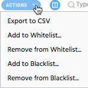

Use the Actions menu at the top of the main section to export or apply list actions to one or more of your apps. Select the apps you want to act on and click  to access this menu. When you save your changes, they will update in the main window.
to access this menu. When you save your changes, they will update in the main window.
